Text and images Copyright (C) 2002 Eric R. Jeschke and may not be used without permission of the author.
In this tutorial I'll show you how to do gaussian blur overlays using The GIMP. This is an interesting technique that intensifies
and saturates the colors in the image, increases contrast, and adds a slightly hazy, "dreamy" feel to the image.
The basic technique is to create a duplicate layer in the image, lighten it and blur it, and combine it using a layer mode with the original.
Giving credit where credit is due: I did not come up with this method. I adapted it for The GIMP from a Photoshop tutorial on the
luminous-landscape.com web site (great photography web site BTW; I recommend it).
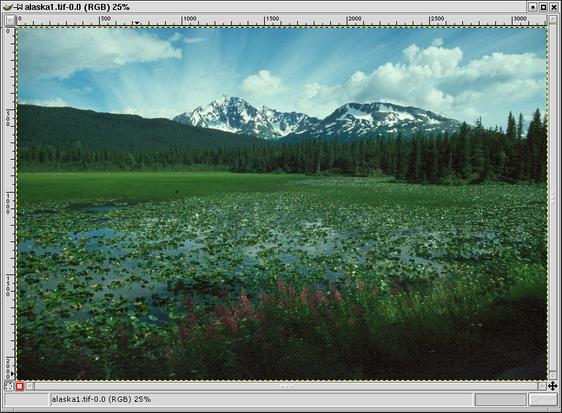
Here is the original example image, loaded into The GIMP.
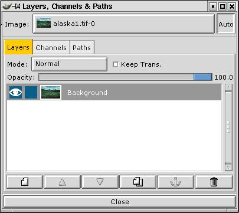 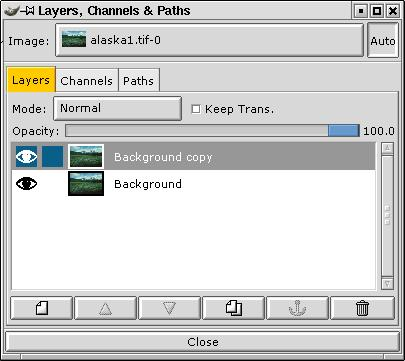
Open the Layers dialog. Right-click on the Background layer and select Duplicate (there is also a button for this in the bottom button bar of the Layers dialog ().

Now double-click on the duplicate layer and rename the new layer "Blur Overlay". This step is not strictly necessary, but it is helpful to prevent confusion about what is on each layer, especially if you add some additional layers for other editing purposes, or more importantly, if you save the file with layers and open it six months later.


In the Layers dialog, select the Blur Overlay layer. In the "Mode" drop-down box, select "Overlay".
Now go back to the image window and apply a Levels
(<Image> Image -> Colors -> Levels) or Curves
(<Image> Image -> Colors -> Curves)
and adjust it until the overall image has the proper brightness.
You'll usually find it necessary to adjust the gamma slider (middle slider in Levels) down.
You are only adjusting the upper layer, but you are viewing the cumulative effect of the layer blend.
Tip: If you don't get a good effect with Overlay mode, try Multiply mode (you can even change this while the Levels dialog is active).
Tip #2: while the Levels dialog is active you can toggle visibility of the upper layer to see the original image and compare to the blend.
Just click on the "eye" next to the upper layer.


Go back to the image window and right click,
selecting <Image> Filters -> Blur -> Gaussian Blur.
You will need to experiment to find the best value, but typically a value between 10 and 30 will do nicely.
Voila! If you don't like the effect, you can undo the blur (Ctrl+Z) and redo it (Shift+Alt+F) with a different value.
Click on the "eye" next to the Blur Overlay layer in the Layers dialog to rapidly compare the image with and without the overlay.
Similarly, turn off the Background layer if you want to view the overlay to do further work on it.
Although I like the effect, there is one problem with this technique and that is that it also increases contrast:
the shadows get darker and the highlights get lighter.
You might be able to apply a contrast mask to counteract this effect,
but in most cases it is the highlights that are the most troublesome in that they have lost detail.
Fortunately we can apply a simple extension to the above technique to protect the highlights.
Duplicate the image (Ctrl+D).
Flatten the duplicate (<Image> Layers -> Flatten Image).
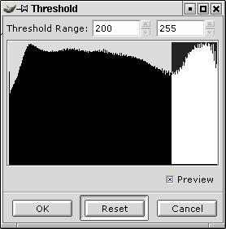

In the duplicate, run a threshold filter (<Image> Image -> Colors -> Threshold).
In the threshold histogram, click and drag to the right to select all the pixels at the upper end of the scale.
Retry or adjust the selection using the number controls in the dialog box until the display shows
most of the pixels you want to preserve as white and all the rest black.
You only need to approximate this, since we're going to clean up the mask anyway.
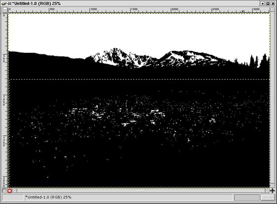
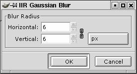

To clean up the mask, I switched to the paintbrush ( ),
hit "x" in the mask image to switch the foreground and background colors (Black/White to White/Black),
selected a nice opaque brush in the Brushes dialog and painted the few pixels of the sky white that hadn't
been turned white (the darkest parts of the clouds).
),
hit "x" in the mask image to switch the foreground and background colors (Black/White to White/Black),
selected a nice opaque brush in the Brushes dialog and painted the few pixels of the sky white that hadn't
been turned white (the darkest parts of the clouds).
Now the black parts. I switched the fg/bg colors back to (Black/White).
I could have painted black all over the lake, but I had a faster idea in mind. I used the marquee
selection tool () to select the whole area and then using the
fill tool ( ) I just clicked in the selection to fill it black in one fell swoop.
) I just clicked in the selection to fill it black in one fell swoop.
I then "feathered" the mask so that it will blend the layers without a harsh transition by applying a 6 pixel gaussian blur to the mask.
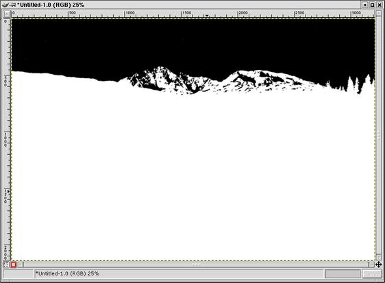
Invert the mask (<Image> Image -> Colors -> Invert), so that the white parts correspond to the parts of the combined layers that you want to keep and the black parts correspond to the parts that should only reflect the original image (the highlights).
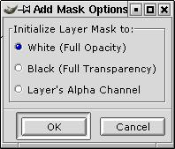

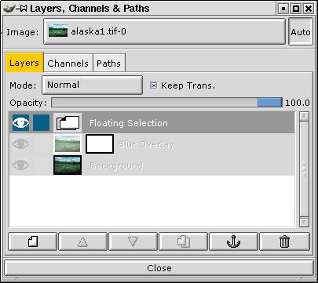

Go to the Layers dialog. Select the overlay blur image in the "Image" drop down box (if it is not selected already).
Right-click on the Blur Overlay layer and select Add Layer Mask. In the Add Mask Options dialog, select White (Full Opacity) and click OK.
Now go back to the blurred threshold image, select all and copy
(Ctrl+A then Ctrl+C). Go back to the overlay blur image and paste (Ctrl+V).
Go to the Layers dialog and click the anchor button ( ) to anchor the mask.
) to anchor the mask.
Tip: Ctrl-click on the layer mask icon in the Layers dialog to toggle the effect of
the layer mask to compare the image with and without the highlight mask.

Here's the result. Compare to the original image (right image). I would flatten and apply a smart sharpening (edges) to finish it out.
 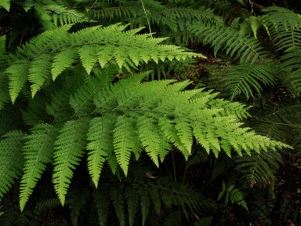
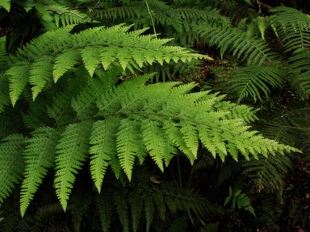
Using "Multiply" for the blending mode. (Final image on the right)
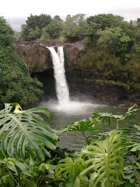

Using "Overlay" for the blending mode, plus a highlight mask for the sky and waterfall. (Final image on the right)
The original tutorial (possibly with updated information) may be found here.